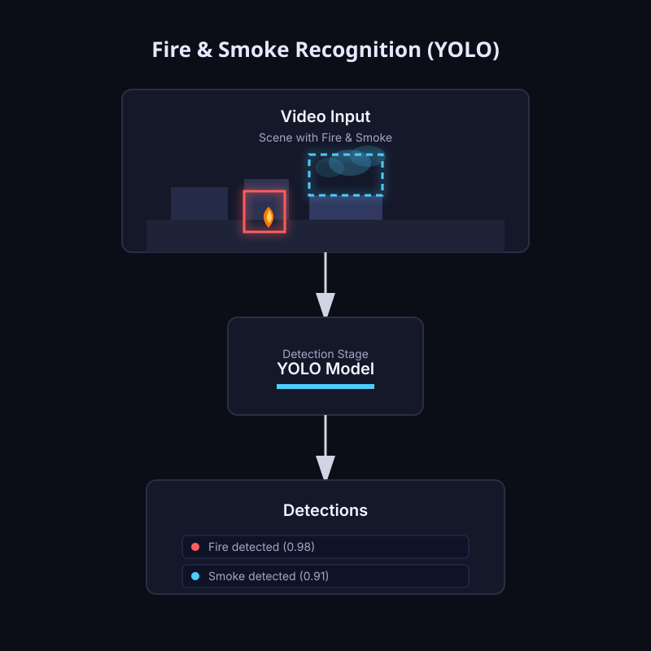
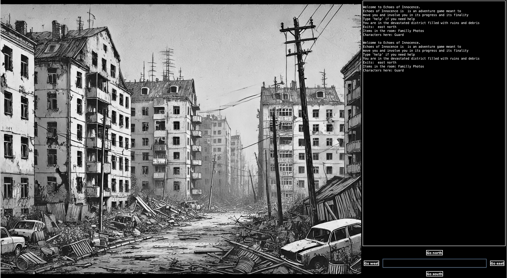

Tremplin Recherche — GNN Sparsification
Structured sparsity experiments to accelerate GNN inference without sacrificing accuracy.
PyTorch Geometric
DGL
Model Compression
Portfolio
Engineering intelligence and security through data, algorithms, and systems.
I’m an engineering student specializing in Artificial Intelligence and Cybersecurity. I like building fast, accessible interfaces and applying machine learning for practical problems such as anomaly detection and graph learning.
Research on Graph Neural Networks sparsification to improve inference latency and memory while preserving accuracy. Exploring structured pruning, topology-aware sparsity, and reproducible benchmarks with PyTorch Geometric/DGL.
Structured sparsity experiments to accelerate GNN inference without sacrificing accuracy.

Fine-tuned YOLO pipeline for onboard detection, cutting false alarms by 30% on field data.

Narrative-driven Java adventure following Mathis in a conflict zone; built on clean OOP architecture.
Echoes of Innocence follows Mathis, a 10-year-old navigating a war-torn city to find his sister Lina. The game blends exploration, moral dilemmas, stealth, and inventory mechanics across locations such as a hidden rebel camp, a ruined cathedral, and the kidnapper’s lair—each revealing fragments of family memories.
Co-created with David J. Barnes, Michael Kolling, and D. Bureau, the project expanded the BlueJ world by refactoring navigation to HashMap exits, adding item collections with weight limits, and introducing branching endings driven by player choices.
2025 — Present
Volunteer, French Red Cross
Coordinating logistics for outreach operations supporting 200+ families while streamlining supply workflows.
2021 — Present
Academic Tutor & Instructor
Guided 45+ students in math, physics, and CS with customized curricula, raising performance metrics by 15% on average.
Open to collaborations and interesting research/engineering challenges.
CV and project PDFs available above.